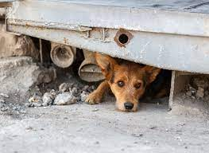

Animal abuse happens more often than you think. One of the biggest ways to abuse an animal is neglecting them. Neglecting them means not taking proper care of them like you should. There are many other forms of abusing animals, some examples will be below.
Here are a few signs to look out for if an animal is getting abused.
If you feel or see an animal is getting abused please don't stay silent speak up about this sitiuation.
